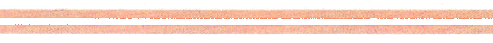
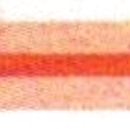

使用说明
《新HSK教程1学练手册》（以下简称“学练手册”）是《新HSK教程1》（以下简称“主干课本”）的配套用书，是主干课本内容的补充、延伸与辅助。The "HSK Standard Course 1 Workbook" (hereinafter referred to as "Workbook") is a supplementary book for the "HSK Standard Course 1" (hereinafter referred to as "Main Textbook"), serving as a supplement, extension, and aid to the content of the Main Textbook.«Рабочая тетрадь к стандартному курсу HSK 1» (далее «Рабочая тетрадь») — это сопроводительная книга к «Стандартному курсу HSK 1» (далее «Основной учебник»), служащая дополнением, расширением и подспорьем к материалам Основного учебника.
本级学练手册包含“学、练、测”三部分：“学”是与主干课本相关的可进一步学习的内容，“练”是匹配学习内容及HSK考试题型的强化练习，“测”则是围绕HSK考试进行的测查练习。This level's Workbook includes three parts: "Study," "Practice," and "Test." "Study" is content related to the Main Textbook for further learning. "Practice" is intensive practice matching the learning content and HSK test question types. "Test" is an assessment exercise centered around the HSK test.Рабочая тетрадь этого уровня включает три части: «Учёба», «Практика» и «Тест». «Учёба» — это материалы для дальнейшего изучения, связанные с Основным учебником. «Практика» — это интенсивные упражнения, соответствующие учебным материалам и типам заданий экзамена HSK. «Тест» — это проверочные упражнения, основанные на экзамене HSK.
据此，我们设计了“小语讲堂”“模拟测练”和“模拟测试”三大板块。Accordingly, we have designed three major sections: "Xiaoyu's Classroom," "Simulated Practice," and "Simulated Test."Соответственно, мы разработали три основных раздела: «Лекторий Сяоюй», «Имитация практики» и «Имитация теста».
“小语讲堂”补充语音与汉字知识，夯实语音和书写基础。语音内容在第1~15课，汉字内容在第7~15课，教师与学习者可按需选学选练。"Xiaoyu's Classroom" supplements knowledge of phonetics and Chinese characters, consolidating the foundation of pronunciation and writing. The phonetics content is in Lessons 1-15, and the character content is in Lessons 7-15. Teachers and learners can select and practice them as needed.«Лекторий Сяоюй» дополняет знания по фонетике и иероглифике, укрепляя основы произношения и письма. Фонетика содержится в уроках 1-15, иероглифика — в уроках 7-15. Учителя и учащиеся могут выбирать их для изучения по мере необходимости.
“模拟测练”从第4课起，将HSK考试题型与课后检测结合，测练一体，题型多样，题量适中，可用于检验每课学习效果。Starting from Lesson 4, "Simulated Practice" combines HSK test question types with post-lesson assessments. It integrates testing and practice, features diverse question types and a moderate number of questions, and can be used to check the learning outcome of each lesson.Начиная с урока 4, «Имитация практики» сочетает типы заданий экзамена HSK с проверкой после урока. Она объединяет тест и практику, имеет разнообразные типы и умеренное количество заданий и может использоваться для проверки результатов каждого урока.
“模拟测试”是一套完整的HSK（一级）模拟考卷，用于在学完一级全部内容后进行综合测评。"Simulated Test" is a complete set of HSK (Level 1) mock exam papers, used for a comprehensive assessment after completing all the Level 1 content.«Имитация теста» — это полный набор пробных экзаменационных работ HSK (Уровень 1), используемый для комплексной оценки после изучения всего материала Уровня 1.
建议师生在教学或学习中配合主干课本使用本手册，科学合理地统筹教学及学习进度。It is recommended that teachers and students use this workbook in conjunction with the Main Textbook during teaching or learning, and scientifically and rationally coordinate the teaching and learning progress.Рекомендуется, чтобы учителя и ученики использовали эту рабочую тетрадь вместе с Основным учебником в процессе преподавания или обучения, и научно и рационально координировали учебный процесс.
本书还配有数字教材，可通过“外研国际智慧教育平台”(https://global.unipus.cn)获取。数字教材涵盖本书配套的音频、视频、交互式学习内容、补充练习等丰富资源。数字教材激活说明请扫描封底二维码查看。This book also comes with digital materials, which can be accessed through the "FLTRP International Smart Education Platform" (https://global.unipus.cn). The digital materials cover rich resources such as audio, video, interactive learning content, and supplementary exercises that accompany this book. For instructions on activating the digital materials, please scan the QR code on the back cover.К этой книге также прилагаются цифровые материалы, доступные через «Международную платформу смарт-образования FLTRP» (https://global.unipus.cn). Цифровые материалы охватывают аудио, видео, интерактивный контент и доп. упражнения. Для активации отсканируйте QR-код на задней обложке.
本书配套资源可通过“外研社汉语教学资源网”(http://www.fltrp-clt.com)查看并下载。The accompanying resources for this book can be viewed and downloaded from the "FLTRP Chinese Language Teaching Resource Website" (http://www.fltrp-clt.com).Сопроводительные ресурсы к этой книге можно просмотреть и скачать на «Ресурсном сайте преподавания китайского языка FLTRP» (http://www.fltrp-clt.com).